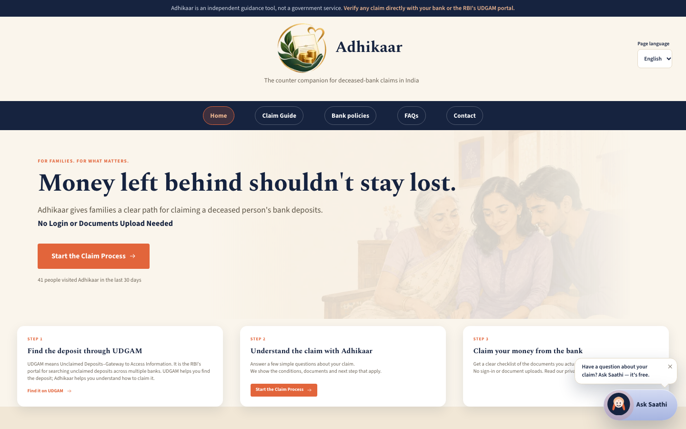
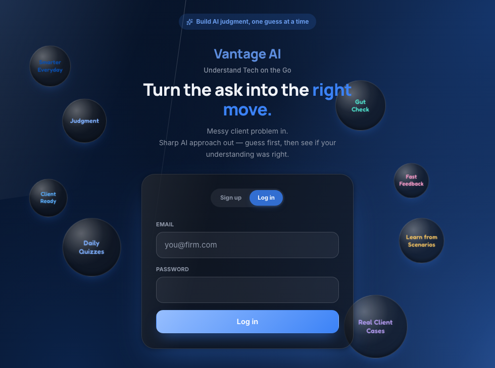
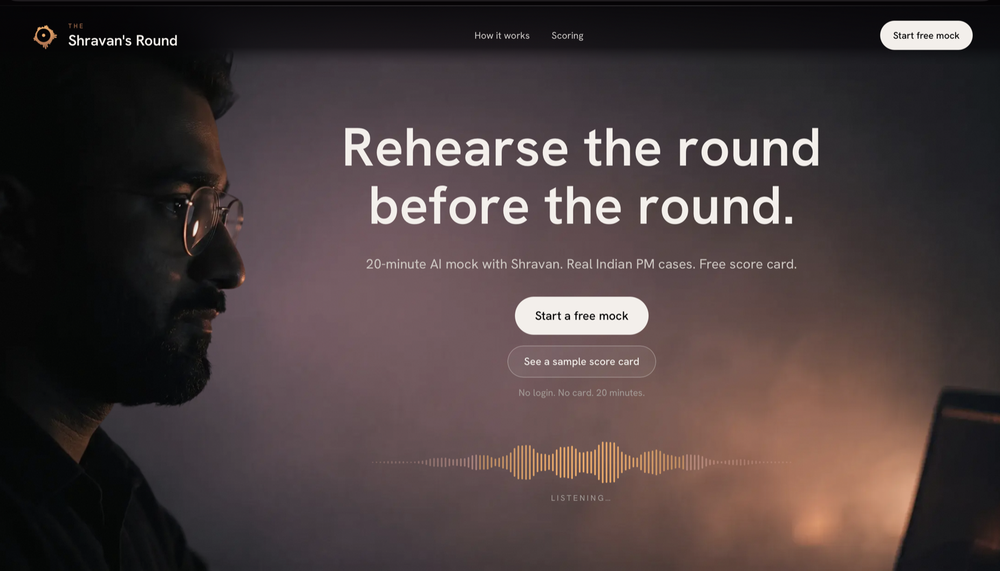
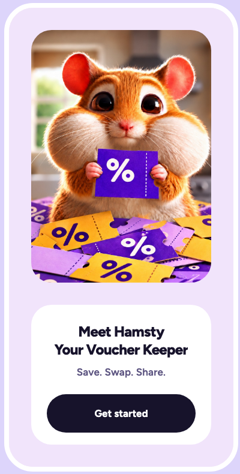

I find a narrow problem, talk to the people who have it, write the PRD, build the product with AI tools, and measure it honestly. My background is fraud investigation and risk at PwC, and retail banking at ICICI and HDFC.
At PwC Acceleration Centers I lead workstreams in fraud investigations and risk analytics, and I manage a team of 8. Before that I worked with customers in retail banking, including AML and KYC reviews.
That work trained me to check every claim against evidence. I use the same rule in my PRDs: each finding says how strong its evidence is, and each metric says what it can and cannot prove.
A risk dashboard for a healthcare client of PwC, built with an external risk-screening technology vendor.
This was a real product with a real client and an external vendor. I sat between the people who needed the product and the people who built it, and the result is measured in time saved per case.
Free guidance that helps a family claim the bank deposits of a person who has died, using the RBI's own rules.

Since the RBI Directions of 2025, a bank usually may not demand a succession certificate for a deposit claim. Legal websites and ChatGPT still give the old answer. For a ₹4 lakh account with no nominee, court costs about ₹17,000–37,000 and 5–7 months. The simplified route costs about ₹1,000 and 4–6 weeks.
The person who releases the money is the branch officer. Other guides speak only to the family. Adhikaar gives the family a page for the officer: the RBI paragraph, with its number, beside the bank's own published policy.
Insurance, mutual funds, shares, EPF, NPS, property and heir disputes. I could verify every claim about bank deposits in the time available, but not the other seven areas.
An AI learning app that trains client-facing consultants to judge which AI approach fits a client problem.

Professionals in India use AI every week. They still cannot tell which AI approach fits a new client problem. Their confidence comes from repeating familiar tasks. Courses add more content, and free content is completed by fewer than 5% of learners.
I interviewed across 8 roles before I chose a persona. The client-facing consultant came out on top: the problem comes back every week, a wrong approach reaches a paying client, and "which approach fits" has an answer that can be graded.
17 external testers used it without an onboarding call. Everyone who started a guess-then-reveal loop finished it. Only 2 of 17 found the scenario quiz, so I changed the navigation. Retention has no data yet.
A 20-minute AI voice mock interview for product manager candidates, with real Indian PM cases and a score card at the end.

The candidate picks a role, experience level and focus. An AI interviewer in Shravan's style asks questions out loud. Each answer decides the next question, and loose answers get a cross-question. Mixed Hindi and English is accepted and scored on clarity.
A voucher wallet. It collects vouchers from pictures and Gmail, reminds people before they expire, and lets them give unused ones away.

Vouchers arrive in email and as screenshots. Most are unnamed codes, for example ₹250 off ₹2,500. People forget them until they expire, and they have no easy way to pass on the ones they will not use.
I split the product into parts (wallet, reminders, nearby alerts, sharing). For each part I write a spec, approve it, then build from a step-by-step plan with automated tests. Each part runs on a real Supabase back end with row-level security.
Two AI agents for a payments company: one turns a sales lead into a payment, one fixes a failed payment. Both hand off to a person at set limits.
Business model: used inside the company to lower cost per case, or sold to merchants as a paid add-on. A small fee is charged per solved case or closed deal.
Sales teams score each lead by hand, and quotes and payment links go out slowly. Support teams check each failed payment by hand, then refund, retry or escalate it. Both jobs repeat the same three steps: look up, decide, act.